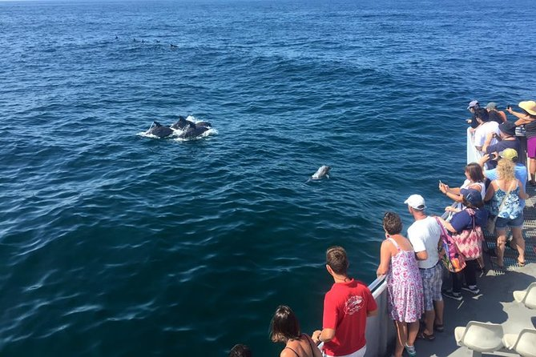
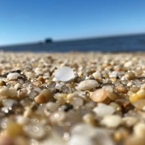
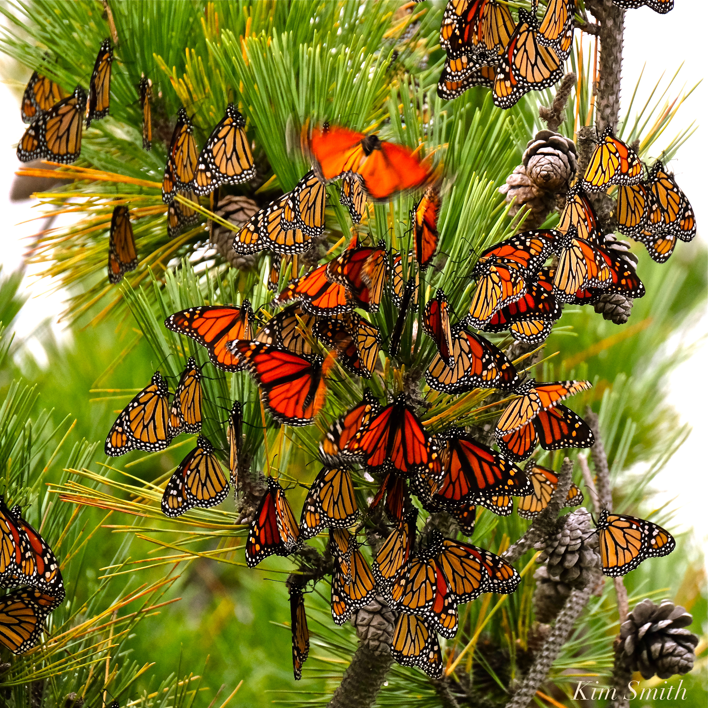

Cape May is a cute town for you to enjoy the beach, collect some crystals, enjoy the butterfly and dragonfly migrations, go on whale and dolphin tours, learn about marine life, and lastly enjoy the food and shopping Cape May has to offer! The beach is next to everything, so you are able to walk right to the beach from your hotel. On the beach, you can play some games, fly a kite, or just relax in a chair and read a book. If you’re lucky, you may spot some fins popping in and out of the water. On one side of the beach, you can go and find some crystals to take home with you. Due to the waves, the crystals are smooth and shiny for the most part. I have a small collection myself. There’s a small gift shop where you can take some other souvenirs home. An amazing experience you may want to consider is going when the butterflies are migrating. You see them everywhere, and it’s absolutely amazing to see these insects that fly over 3,000 miles come so far. They collect nectar from flowers so that when they are ready, they continue migrating to central Mexico. There is a tour where you can go and talk to a butterfly specialist, and they show you a living butterfly and tell you some facts about the butterflies or their migration. Another fun thing to do is you can go on a boat tour to find dolphins and whales. This is a pretty cool experience because you can see one up close, and you can learn some amazing things about them. If you’re looking for a nice place to eat that has a view of the beach, go to Harry’s. Harry’s has all kinds of seafood choices to pick from. My favorite dessert there is their lava cakes, it’s warm and chocolatey, the mix between the soft cake and the chocolate filling makes it complete.